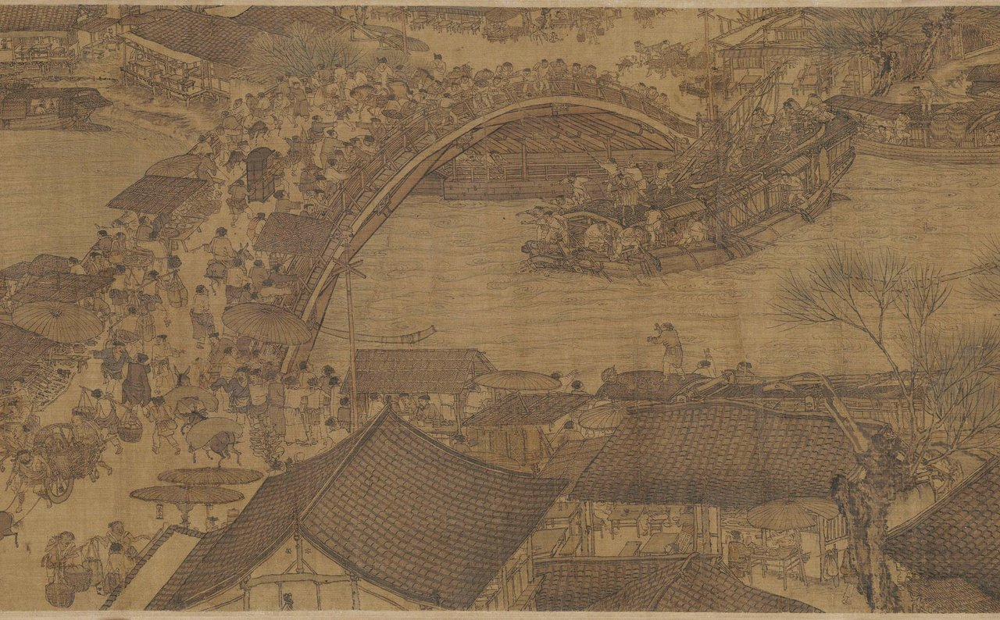
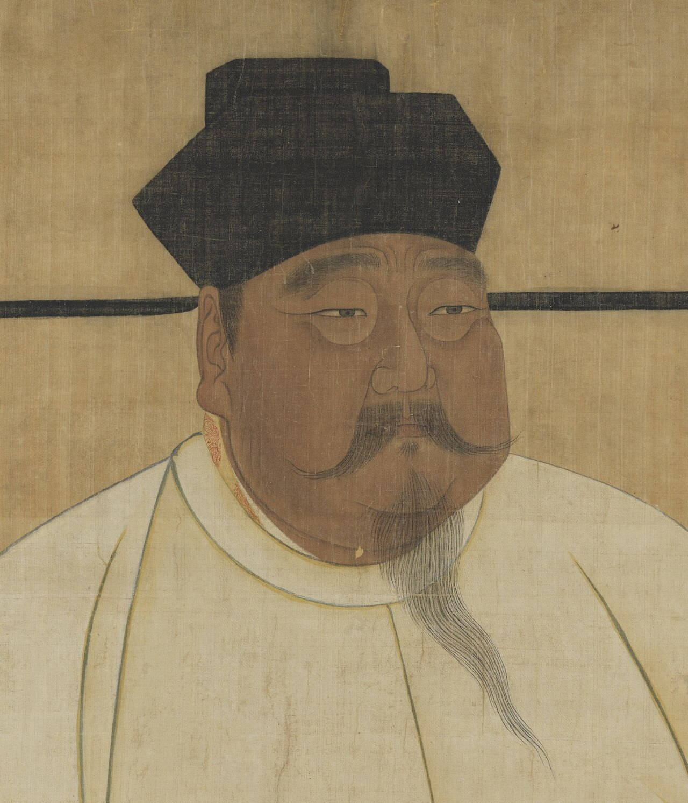
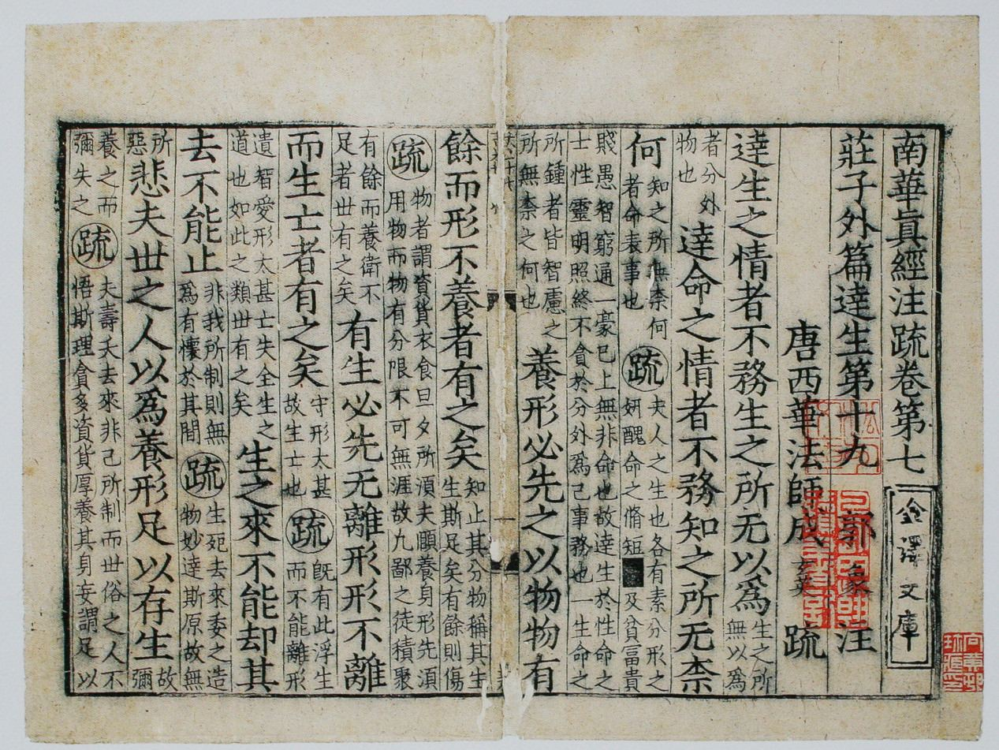
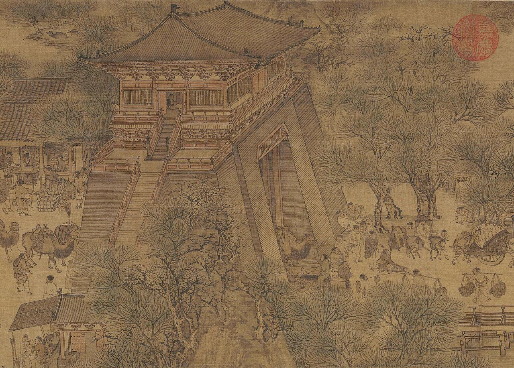
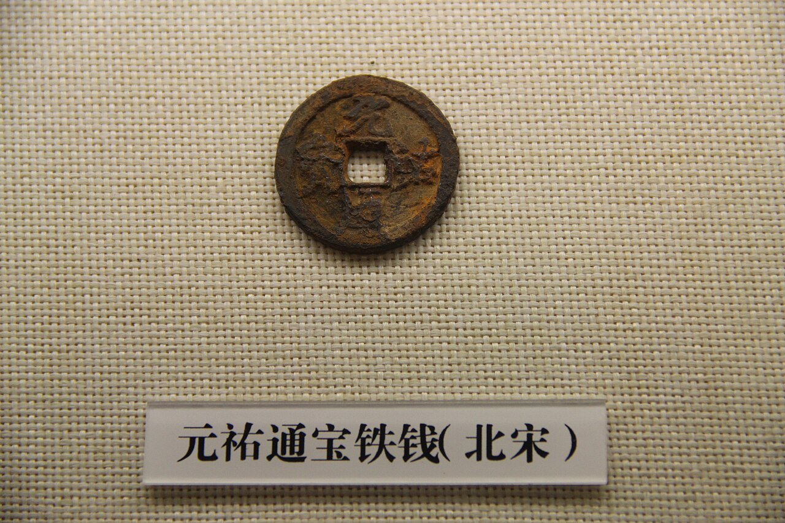
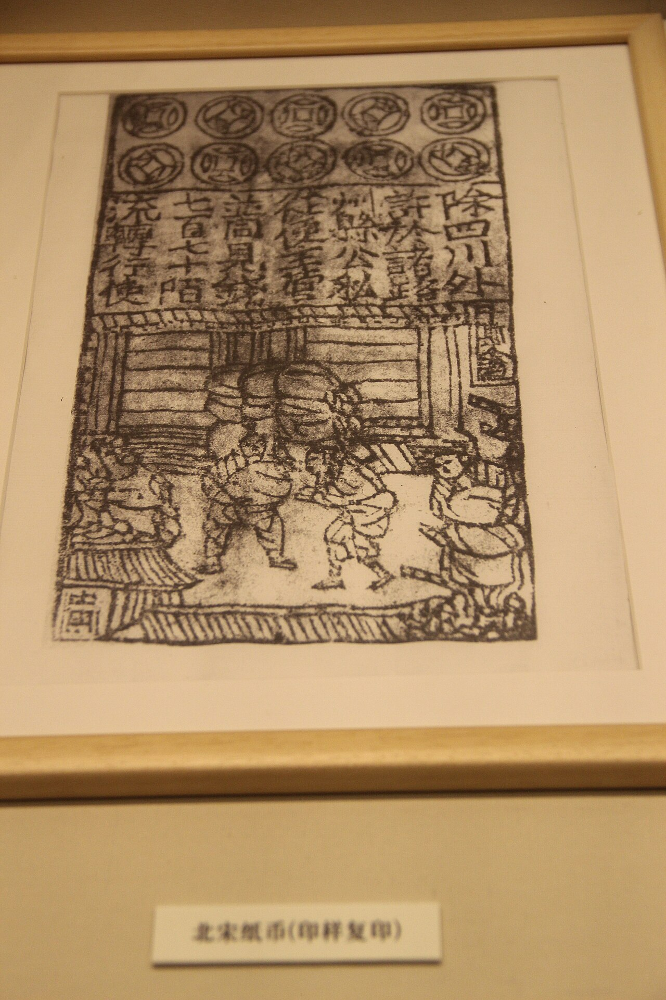
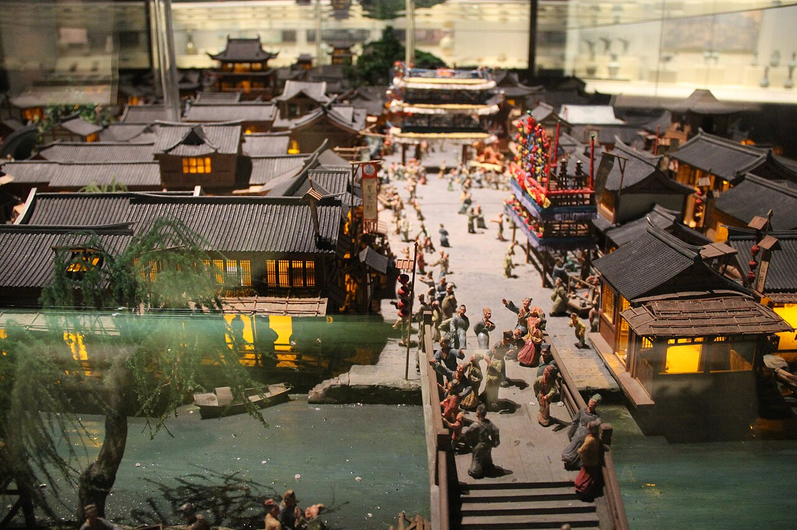

歴史・地理 History & Geography紙幣と 羅針盤は、 なぜ 宋の中国で 生まれた？ 紙のお金も、船で使う羅針盤も、およそ1,000年前の宋の中国で使われ始めました。戦いに弱く、平和をお金で買った国で、なぜ新しいお金と道具が育ったのでしょう。地図と流れ図で、重い鉄の銭から紙幣までをたどってみませんか。
2026.11.11 UP 約8分で読める 文：SOMOSOMO編集部
写真：清明上河図（部分・北宋の都 開封を描いたとされる）／伝 張択端（12世紀、パブリックドメイン）
Previously
前回は中世ヨーロッパの教会の話でした。1077年、カノッサの城で、ドイツ王ハインリヒ4世が3日待ち、教皇グレゴリウス7世に破門を解いてもらいます。教会は税と文字と破門を握っていました。けれども1084年、王はローマに攻め入り、自分の立てた教皇から皇帝の冠を受けます。
中国の内陸、四川の町・成都（いまの四川省の中心の町）。1024年の春、役所が刷った紙のお金が、はじめて人々の手に渡りました。「交子（こうし）」と呼ばれる紙幣です。それまでこの土地では、鉄でできた重い銭が使われていました。
国が出す紙のお金は、これが世界で最初とされます。同じ宋の時代には、磁石の針で方角を知る羅針盤も、船で使われ始めました。紙幣と羅針盤は、なぜ宋の中国で生まれたのでしょうか 。
文字を1字ずつ組む活字も、この時代の本に現れます。ヨーロッパで王と教皇が争っていたころです。答えの鍵は、技術そのものより、宋という国の形にあります。その国は、戦いに強くありませんでした。
In a word
平和を買って商いを広げた宋に、紙と印刷と海の交易 がそろったから。
01
The Scholars
剣を 置かせた皇帝は、 試験で 役人を選んだ
第14話で見た唐が907年に滅びると、中国では短い王朝がいくつも入れ替わりました。軍を率いる将軍が、次々と位を奪ったからです。960年、そのひとり趙匡胤（ちょうきょういん）がクーデター（武力で政権を奪うこと）を起こし、皇帝から位を譲らせます。宋の初代皇帝、太祖です。
太祖は、同じことがくり返されるのを恐れました。伝えられる話では、即位してまもなく将軍たちを宴に招き、軍の指揮から退くかわりに、広い土地と手厚い暮らしを約束しました。将軍たちは、ひとり残らずこれを受け入れました。

宋を開いた皇帝 宋の時代に描かれた、太祖（趙匡胤）の肖像画の一部です。台北の故宮博物院にあります。将軍あがりの皇帝ですが、身につけているのは鎧ではなく、白い衣です。写真：Song Taizu (cropped) ／作者不明（宋代・960〜1279年、パブリックドメイン）
将軍に代わって国を動かしたのが、試験で選ばれた役人です。科挙（かきょ）と呼ばれる役人の採用試験は隋の時代からありましたが、唐で試験を通った役人は1割に満たなかったとされます。宋では、役人の多くが試験で選ばれるようになりました。
家柄や武力ではなく、読み書きと学問が出世の道になりました。宋は、剣より筆の国として歩み始めます 。
試験に備える人々に本を届けたのが、木版印刷（板に文字を彫って刷るやり方）です。唐の時代からありましたが、宋で一気に広がりました。成都では971年から、仏教の経典をすべて刷るための版木が彫られ、983年に刷り上がっています。版木の数は13万枚でした。
11世紀の半ばには、畢昇（ひっしょう）という職人が、焼いた粘土に1字ずつ文字を彫った活字を作ります。いま知られる最古の活字です。この話は、のちに科挙を通って役人になった学者、沈括（しんかつ）が書き残したおかげで、いまに伝わりました。

木版で刷られた本 宋の時代に刷られた『荘子』の注釈書の見開きです。日本に伝わり、いまは東京の静嘉堂文庫にあります。大きな字の本文の間に、小さな字の注が2行ずつ整然と並んでいます。写真：Zhuangzi Song Edition ／作者不明（13世紀、パブリックドメイン）
02
Buying Peace
宋は、 戦うかわりに 平和を お金で買った
将軍の力を抑えたぶん、宋は戦いに強くありませんでした。北には、遊牧の民の契丹（きったん）が建てた遼（りょう）という国があります。遼は、いまの北京を含む土地を押さえ、たびたび南へ攻め込みました。北西には、のちに西夏（せいか）という国も立ちます。
1004年、遼の皇帝が自ら軍を率いて、宋の都・開封（いまの河南省開封市）から160キロほどの所まで迫りました。宋の皇帝は黄河を渡った澶州（せんしゅう）の町で迎え撃ち、翌1005年1月、両国は和を結びます。「澶淵（せんえん）の盟」と呼ばれる約束です。
宋は毎年、絹の反物20万匹と銀10万両（両は重さの単位）を遼に贈ることになりました。そのかわり、およそ100年のあいだ、両国の大きな戦いは止まります。贈りものは重い負担に見えますが、遼と戦い続ける軍の費用にくらべれば、ずっと小さな出費だったとされます。
贈りものは宋の経済をあまり傷つけなかった、という見方もあります。遼が、宋から大量の品物を買っていたからです。宋は、戦うかわりに平和をお金で買い、その平和の中で商いを広げていきました 。
Fig.01 11世紀ごろの 宋と、 この話の舞台
遼（契丹）
西夏
宋
東シナ海
黄河
長江
開封（北宋の都）
成都（交子）
臨安（杭州）
澶州（澶淵の盟）
広州
泉州
燕京（いまの北京）
この話の主な町
そのほかの舞台
遼の町
見どころは、紙幣の生まれた成都が海から遠い内陸にあり、羅針盤を積んだ船が出た港は南の海辺にあること。国の境は描かず、国の名はおおよその位置に置きました。川はいまの流れです。地図は Natural Earth（パブリックドメイン）から作りました。
平和の中で、人も増えました。10世紀から11世紀のあいだに中国の人口は倍になり、北宋（都が開封にあったころの宋）の人口はおよそ9,000万人と見積もられています。開封と、のちの都の杭州は、人口が100万人を超える、世界有数の大都市でした。
扉の絵は、その開封のにぎわいを描いたとされる絵巻『清明上河図（せいめいじょうがず）』の一部です。長さ5メートルあまりの絵の中に、船に荷を積む人や店、税を取る役所まで描かれています。のちの時代には、この絵を写した作品が何百も作られました。

都の門をくぐるラクダ 『清明上河図』の、町の門のあたりです。門の左手と門の口に、ラクダが描かれています。門の上には楼閣が建っています。荷を担ぐ人や車を引く人も描かれ、都に物が集まるようすが見てとれます。写真：Bianjing city gate ／伝 張択端（12世紀、パブリックドメイン）
03
From Iron to Paper
重い鉄の銭が、 紙のお金を 生んだ
商いが増えると、お金が足りなくなります。宋のお金は、銅でできた丸い銭でした。真ん中に四角い穴があり、ひもを通して束ねて使います。ところが銅の銭は、国の外にも流れ出しました。銅の銭は値打ちが高く、隣の国々も欲しがりました。遼や西夏は、自分たちの鉄の銭を、宋の銅の銭と取りかえようとしていました。
四川では、事情がもっと厳しくなりました。もともと銅が少なく、宋より前から鉄の銭を使っていた土地です。宋も四川では鉄の銭を使わせ続けました（銅を都に集め、国の外へ流さないためともいわれます）。鉄の銭は銅の銭より値打ちが低く、同じ額を払うには、ずっと重い銭が要ります。
鉄の銭1,000枚は25斤（いまの重さでおよそ15キロ）あったとも伝えられ、商人は車で銭を運ぶこともありました。大きな取り引きのたびに、重い銭の山を動かさなければなりませんでした。

さびた鉄の銭 中国の邯鄲市博物館に展示されている、北宋の鉄の銭「元祐通宝」です。銅の銭と同じく、真ん中に四角い穴が開いています。鉄はさびやすく、いまはきれいな形で残るものが少なくなっています。写真：Northern Song Ancient Chinese Iron Coin ／Gary Todd（2014年、CC0）
そこで11世紀のはじめ、成都の商人たちが知恵を出しました。重い鉄の銭を店で預かり、かわりに金額を書いた紙の預かり証を渡します。これが交子の始まりでした。やがて成都の大商人16軒が組合を作り、役所の許しを得て交子を出すようになります。
ところが、預かった銭を商売に使いこみ、交子を銭に戻せない店が出てきます。人々が店に押しかける騒ぎも起きました。そこで1023年、宋は交子を出す役所を成都に置き、商人による発行をやめさせます。翌1024年、国の紙幣が刷られました。冒頭の場面です。
Fig.02 預かり証が 国の紙幣に なるまで
11世紀のはじめ 鉄の銭を店に預ける 成都の商人が、重い銭を預かる 同じころ 紙の預かり証を渡す 金額を書いた紙（交子）で取り引きできる やがて 16軒の大商人が組合に 役所の許しを得て、交子を出す 1023〜24年 役所が交子を出す 銭に戻せない騒ぎのあと、国の紙幣になる
見どころは、紙幣が「預かり証」から始まったこと。国が出す前から、商人どうしの信用で紙が回っていました。年は出典に挙げた記事によります。
紙幣が成都で生まれたわけは、ここまでの話からも見えてきます。重い鉄の銭に困る商人がいて、紙に字を書けば読める人々がいました。そして、13万枚の版木を彫って経典を刷り上げた、印刷の町でもありました。
紙のお金は、やがて四川の外にも広がります。偽物を防ぐため、交子にはいくつもの印が押され、色を重ねて刷られました。重い金属の銭を、紙に刷った約束に置きかえたのが、宋の紙幣でした 。

紙幣の図柄 博物館に展示された、北宋の紙幣の図柄の刷りの複製です。上に銭の形の模様が並び、その下に文字、いちばん下に荷を運ぶ人々が描かれています。右はしの列は「除四川外（四川をのぞく）」と始まり、四川の外で使う札だとわかります。四川の交子そのものではありません。写真：Chinese Money 11 - Northern Song Paper Currency ／Gary Todd（2012年、CC0）
04
The Needle
磁石の針は、 海を渡る 道しるべになった
磁石の針の羅針盤の記録は、宋の本から始まります。1044年に朝廷でまとめられた兵法の本『武経総要（ぶけいそうよう）』には、薄い鉄を魚の形に切って熱し、水に浮かべて南を指させる「指南魚」が出てきます。暗い夜や曇りの日に、軍が方角を知るための道具でした。
1088年には、第1章に出てきた沈括が、本『夢渓筆談（むけいひつだん）』に、磁石でこすった針のことを書きました。針は南か北を指し、絹の糸1本でつるすのがいちばんよい、と記しています。さらに、針は真南ではなく、いつもわずかに東へずれる、とも書きました。
Fig.03 沈括が書いた 「つるした針」
横から見ると
絹の糸1本
真ん中を、ろうで留める
針は磁石でこすったもの
赤＝南を指す側
上から見ると
北
東
西
真南
針の南の端
わずかに東へ
見どころは、右の図で、針の南の端が真南の線から少し東へずれていること。沈括が書き留めた「ずれ」です。見やすいように、ずれの角度は大きめに描いています。図は『夢渓筆談』の説明をもとにした模式図です。
その針が海に出たことを記すのが、朱彧（しゅいく）の『萍洲可談（ひょうしゅうかだん）』です。1111〜1117年ごろの本で、船の水先案内人は夜は星、昼は太陽を見て進み、曇りの日には「南を指す針」を見る、と書かれています。ヨーロッパで船の磁針の記録が現れるのは1190年ごろで、70年あまりあとです。
宋の船が針を頼りにしたのは、海の商いが盛んだったからです。広州や泉州の港からは、東南アジアやインド洋へ船が出ていきました。1154年には、北アフリカのセウタ生まれの地理学者イドリーシーが、鉄や絹、陶磁器を積んで毎年インド洋を行き来する中国の商船のことを書いています。
針を積んだ船の行き先は、宋が北を失ってから、いっそう国の命綱になりました。1125年に遼を滅ぼした、女真（じょしん）の国・金が、宋にも攻め込みます。
1127年1月に開封が落ち、まもなく前の皇帝・徽宗（きそう）と、息子の皇帝・欽宗（きんそう）が捕らえられました。「靖康（せいこう）の変」と呼ばれるできごとです。
皇族の生き残りは長江の南へ逃れ、臨安（いまの杭州）を都にします。ここからを南宋と呼びます。南宋は1132年に中国で初めての常設の海軍を置き、海の道を守りました。紙幣も、杭州などの役所の工場で刷られ続けます。

南宋の都を再現した模型 杭州の浙江省博物館にある、南宋の臨安の町並みの模型です。水路のすぐそばまで店が並び、通りには人があふれています。写真は模型です。写真：Hangzhou in Southern Song Diorama ／Gary Todd（2015年、CC0）
こうしてみると、紙幣と羅針盤が生まれた背景には、同じ宋の姿があります。武より文を選び、試験と印刷で文字の力を広げたこと。平和をお金で買い、そのあいだに商いの国になったこと。重い銭を運ぶ不便と、暗い海を渡る不安を、宋の人々は紙と針で解いた のです。
05
By the Numbers
数字で見る 宋の紙と文字
40万人 13世紀の終わりごろ、州で行われる科挙の1次試験を受けた人の数11世紀はじめは3万人。Song dynasty（Wikipedia）による
150万枚 1101年まで、新安（いまの安徽省）の1つの州だけで、毎年都へ納めていた紙の枚数Economy of the Song dynasty（Wikipedia）による
1,000人超 1175年、杭州の紙幣の工場で毎日働いていた人の数Song dynasty（Wikipedia）による
Here's the Fun Part
ここが面白い！最初の紙幣の国は、 最初の「刷りすぎ」の 国でもあった
紙のお金には、弱点があります。銅や鉄の銭と違って、刷ればいくらでも増やせることです。宋の役所も、やがてそこにはまりました。銭の裏づけが足りないまま交子が出回り、値打ちが下がっていきます。1105年に切りかえが決まり、1107年に新しい紙幣「銭引（せんいん）」に替わりました。
南宋も1160年から「会子（かいし）」という紙幣を出します。けれども最後は、南へ攻めてくるモンゴルとの戦いの費用のために刷りすぎました。宋の終わりごろには、200文の会子でわらじ1足も買えなくなったと伝えられます。宋は1279年、モンゴルの建てた元に滅ぼされました。
紙のお金を世界で最初に使った国は、紙のお金の値打ちが崩れる怖さを、最初に味わった国でもありました 。紙幣の値打ちは、それを出す国を人々が信じる強さで決まります。
財布の中のお札も、紙そのものの値打ちは、書かれた金額よりずっと小さなものです。次にお札で買い物をするときは、1,000年前の成都で、重い鉄の銭のかわりに紙を受け取った人々のことを思い出してみてください。
To be continued
沈括が『夢渓筆談』を書き上げた7年後の1095年11月。ユーラシアの西、フランスの町クレルモンで、クリュニー修道院出身の教皇ウルバヌス2世が、東ローマ皇帝の求めに応えて、聖地エルサレムのある東方へ兵を送ろうと呼びかけました。十字軍の始まりです。十字軍は、何のために戦ったのでしょうか。
出典・参考
Jiaozi (currency) （Wikipedia 英語版）：11世紀に成都で現れたこと、重い鉄銭に代わるものとして民間の商人が出したこと、16の大商人の組合、倒産が続き1023年に役所（交子務）が置かれたこと、1024年に最初の官の交子が出たこと、偽造を防ぐ印、1105年に銭引に切りかえが決まったこと、裏づけの銭が足りず値打ちが下がったこと交子 （Wikipedia 日本語版）・交子 （Wikipedia 中国語版）：四川で銅が少なく鉄銭が使われたこと、銅銭が西夏などへ流れないよう鉄銭が使われ続けたこと、鉄銭を預かって預かり証を出したこと、交子鋪が銭を返せず騒ぎが起きたこと、1023年の官営化と1024年の発行、鉄銭1,000文が約25斤あり車で運んだこと、色を重ねた刷りHuizi (currency) （Wikipedia 英語版）：1160年からの南宋の会子、モンゴルとの戦いで刷りすぎたこと、200文の会子でわらじ1足も買えなくなったことEconomy of the Song dynasty （Wikipedia 英語版）：銅銭が国の外へ流れ、遼と西夏が鉄銭と宋の銅銭を取りかえようとしたこと、1101年まで新安から毎年150万枚の紙が都へ納められたこと（数字の欄）、紙幣の工場Song dynasty （Wikipedia 英語版）：960〜1279年、北宋と南宋、臨安への遷都、世界で最初の紙幣、人口の倍増と北宋の約9,000万人、開封と杭州が100万人を超えたこと、科挙と印刷、州の試験の受験者が11世紀はじめの3万人から13世紀後半の40万人に増えたこと（数字の欄）、遼への贈りものが宋の経済をあまり傷つけなかったとする見方、1132年の常設の海軍、1154年のイドリーシーの記録、港、1175年の杭州の紙幣工場の千人あまり（数字の欄）、1279年の崖山の戦いEmperor Taizu of Song （Wikipedia 英語版）：960年のクーデター、将軍たちを宴に招いて退かせた話、唐では試験で選ばれた役人が1割に満たず、宋では多くが試験で選ばれたことChanyuan Treaty （Wikipedia 英語版）：1004年の遼の侵攻（開封の北約160キロ）、澶州、1005年1月の和議、毎年の絹20万匹・銀10万両、およそ100年の平和、軍の費用よりずっと小さな負担だったことLiao dynasty （Wikipedia 英語版）：契丹の国（916〜1125年）、いまの北京を含む土地、1125年に金に滅ぼされたことWoodblock printing ・Bi Sheng （Wikipedia 英語版）：971年から成都で彫られ983年に刷られた経典と13万枚の版木、畢昇の粘土の活字（1039〜1048年）と、沈括の記録で伝わったことShen Kuo （Wikipedia 英語版）：1063年に科挙に合格したこと、1088年の『夢渓筆談』、磁石でこすった針、つるすのがよいとしたこと、針がわずかに東へずれることHistory of the compass （Wikipedia 英語版）：『武経総要』（1044年）の指南魚、沈括の1088年の記述、朱彧『萍洲可談』（1111〜1117年）の航海の記録、ヨーロッパの最初の記録（1190年ごろ、ネッカム）Gunpowder （Wikipedia 英語版）：『武経総要』（1040〜1044年）の火薬の調合Along the River During the Qingming Festival （Wikipedia 英語版）：張択端の作とされる開封の絵巻、長さ5.25メートル、荷を積む人や店・税の役所が描かれていること、後の時代の写しが数多いことJingkang incident ・Hangzhou （Wikipedia 英語版）：1127年1月の開封の陥落、徽宗と欽宗が捕らえられたこと、南宋の都・臨安Council of Clermont ・Pope Urban II （Wikipedia 英語版）：1095年11月のクレルモン教会会議、東ローマ皇帝の求めに応えた呼びかけ、ウルバヌス2世がクリュニーの出身だったこと（次の話へ）地図（Fig.01）：Natural Earth （パブリックドメイン）の海岸線と川から作成。町の位置はおおよそ
写真：CC0 またはパブリックドメイン。扉は『清明上河図』の虹橋のあたりを切り出したもの（Alongtheriver QingMing ／伝 張択端、12世紀、パブリックドメイン）。本文中の写真のクレジットは、それぞれの写真の下に記しています